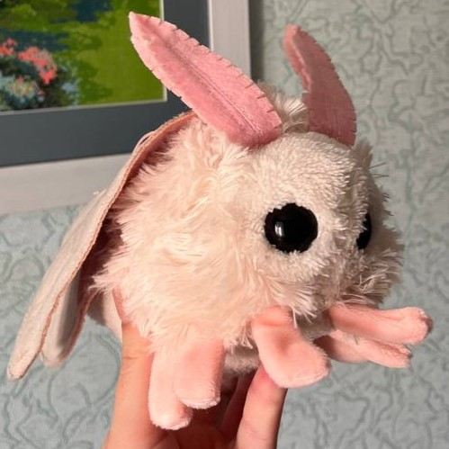

Литвин Юлія Володимирівна
Навчається на третьому курсі за спеціальністю 122 "Комп'ютерні науки", паралельно здобуває освіту журналіста в Полтавському педагогічному університеті імені В. Г. Короленка. Моя хороша подруга та слухачка. Підкаже, покаже те, чого не розумієш, одним словом — баба АГОНЬ. Має домашнього улюбленця — міль на ім'я Анфіса.
